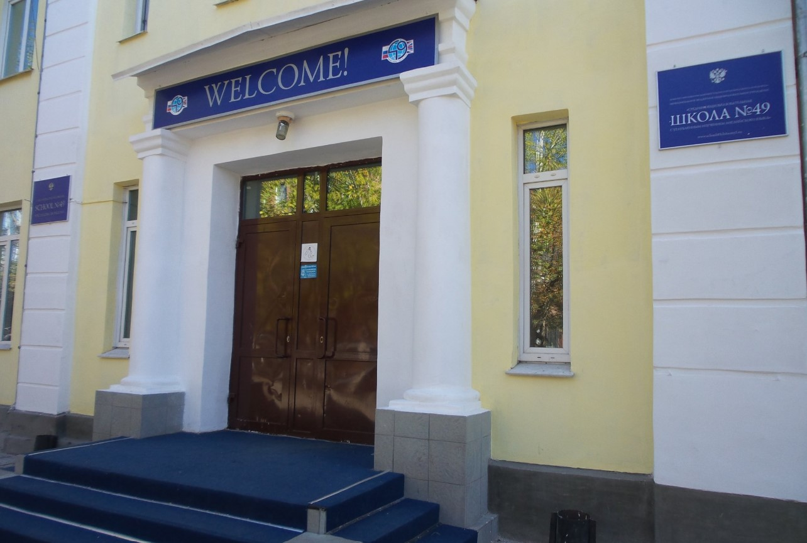

Школа была открыта в 1932 г. В 1966 г. получила статус спецшколы с углубленным изучением английского языка. В 2006 г. школа приняла участие в конкурсе на получение Президентского гранта и стала его лауреатом. Лауреатами этой высокой награды стали также три учителя английского языка школы. Школа занесена во «Всероссийскую книгу почета» и энциклопедию Забайкалья. Учащиеся нашей школы традиционно являются победителями Российско-Американского конкурса (АСПРЯЛ), олимпиад и конференций различного уровня. Выпускники школы поступают в ВУЗы не только нашей страны, но и за рубежом. Школа работает по образовательным программам развивающего обучения и языковых спецшкол и интегрированным курсам: со 2-го класса английский язык, с 7-го – французский. Старшая профильная школа работает по спецкурсам, элективным курсам. В 2004 году была четко выстроена Программа развития, а затем в 2005 году была разработана Программа «Создание системы качества образования», где был проведен детальный анализ функционирования и обобщен педагогический опыт. Программам была дана высокая оценка как инновационно-мотивационным, и школа получила 1-е место в рейтинге образовательных учреждений города Читы по качеству образования, по оценке общих достижений школ; как образовательное учреждение, внедряющее инновационные программы. Бренд школы № 49 хорошо известен не только в нашем крае, но и в стране.
